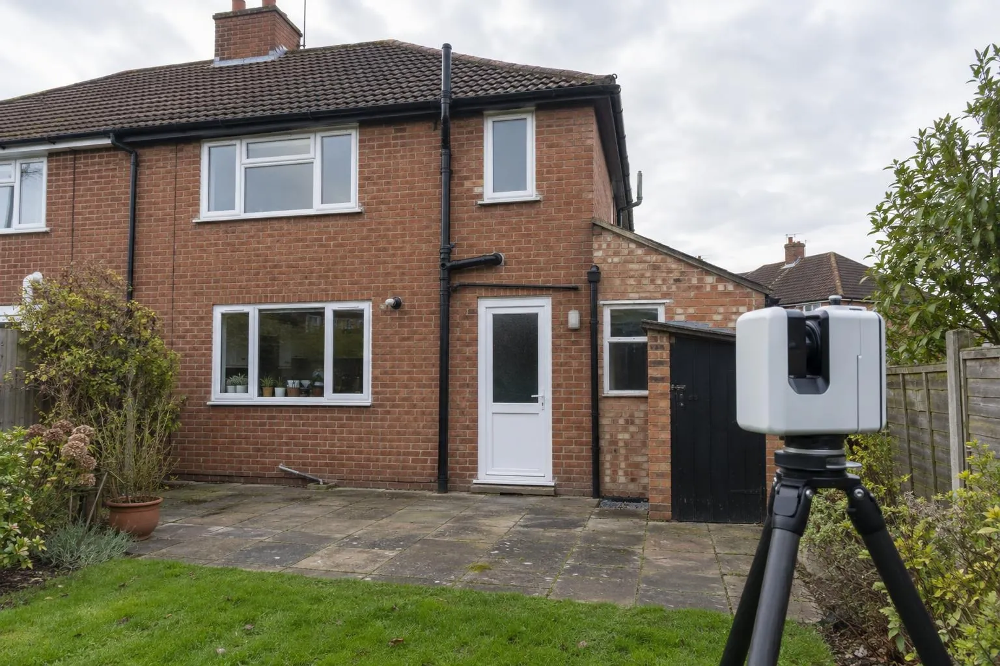

Road & sub-base scanning
Sub-base and binder checked against the road design before the next layer goes on.
3D measured building surveys
Every wall, opening, step and out-of-square corner captured in one visit. Plans, elevations and a point cloud your kitchen designer, architect or builder can work straight from.

In short: we laser scan the rooms or elevations you need, join the scans into one accurate 3D model of the building, and draw scaled plans and elevations from it. You get the drawings and the point cloud, so any dimension can be checked later without another visit.
Walls are rarely square and floors are rarely level. A scan shows both before you order, along with the exact position of the window, soil stack, boiler flue and every socket. Designs that fit first time mean fewer filler panels and fewer awkward conversations at installation.
Your architect or designer needs accurate existing drawings for planning and building regulations. We scan inside and out in one visit: rooms, the elevations being extended, eaves and ridge heights, and the ground around the house.
Built-in furniture, staircases and alcove units are made to measure. A point cloud gives you the real shape of the space, including the bow in the wall that a tape would miss.
Price from real quantities instead of a quick tape-round. Floor areas, wall areas and openings are all in the model.

Drawings are supplied as PDF and DWG. If your software needs a particular format or layer set-up, tell us when you book.
For a rear or side extension we scan the elevation being built against, the eaves and gutter line, rainwater and soil pipes, manholes, the boundary, and the ground levels across the area being built on. That's the information a designer needs to get the floor level, roof pitch and drainage right first time.
If the ground is being landscaped at the same time, the same visit can include a full garden and landscape scan.

See the measured building survey cost guide for prices.
Sub-base and binder checked against the road design before the next layer goes on.
Before-and-after scans that map the thickness actually laid, across the whole road.
Slab flatness, brickwork to drawing and drain collar positions, checked plot by plot.
Every level, wall, tree and step captured for landscape designers and builders.
A survey that records the exact size and shape of a building, inside or out. We laser scan every room or elevation, join the scans into one 3D point cloud and draw the plans and elevations from it, so every wall, opening, step and out-of-square corner is where it really is.
Hand measurements miss things: walls that aren't square, floors that aren't level, a chimney breast that leans. A scan captures all of it in one visit, and if a designer needs a dimension later that nobody thought to take, it's already in the point cloud.
A registered point cloud (E57, RCP or LAS) and scaled floor plans and elevations as PDF and DWG. We can also provide a 360° walkthrough from the scan positions. Tell us what your designer or architect works in and we match it.
Most rooms and whole houses are surveyed in a single visit, at a time that suits you. Drawings follow in three to five working days.
It is accurate enough to design from, with walls and openings to within a few millimetres. Stone and quartz worktops are normally still templated by the fabricator after the units are fitted, and we'd always recommend that.
Yes. We scan the rear or side elevations, eaves, rainwater goods, drains and the ground levels around the house, which gives your architect accurate existing drawings for planning and building regulations.
Send the drawing, the location and when you need it. We reply the same working day with a fixed price.